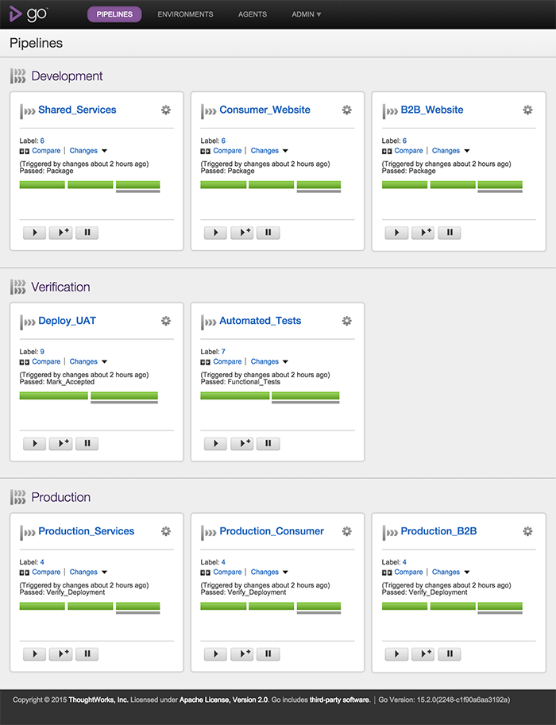
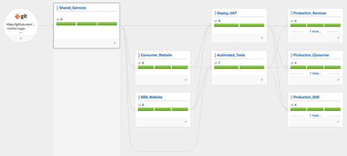

If you're interested in checking out GoCD but don't want to spend the time automating your own system, this might be a great option for you. We've created an environment using Vagrant and Virtualbox. Once it's up, you'll have a full GoCD installation including several example pipelines.
Note: This is an update to a blog post last year. The demo has been modified enough to warrant a new post.
The original version of this box used very simple PHP applications with some also simple tests. Neither these applications nor the tests were "real" enough to be representative of what you're actually doing, and the need to keep the demo box self contained made the real applications more of a distraction and source of problems than anything of real value.
This version uses Rake with empty targets and simple /bin/echo tasks instead of real deployments.
System Requirements
In order to run this you'll need Virtualbox and Vagrant. Both of these are available for most operating systems.
Using the box
To get started, open a command prompt in an empty directory and type…
vagrant init gocd/gocd-demo
This will create a file called Vagrantfile in your current directory.
Next, type…
vagrant up
Completion of this (especially the first time) will take quite a while, depending on your bandwidth. Vagrant will be downloading the full box image (about 1GB) from Vagrantcloud while you wait.
Note: If you have an existing GoCD installation on the same machine as this virtual machine you may get a port conflict.
After a few minutes, you should be able to navigate to https://localhost:8153/go/pipelines on your local machine and see the following…

These pipelines are all related, as shown in the following value stream map screenshot…

Feel free to play around with the installation and see how everything works. You can always reset the box to it's orginal state if you need to!
What's on the machine?
The box will be updated as new things come out, but as of this writing…
- GoCD 15.2 Server
- GoCD 15.2 Agent
- Pipelines which are simulated using empty Rake targets and /bin/echo commands
As always, GoCD questions can be asked at https://groups.google.com/g/go-cd